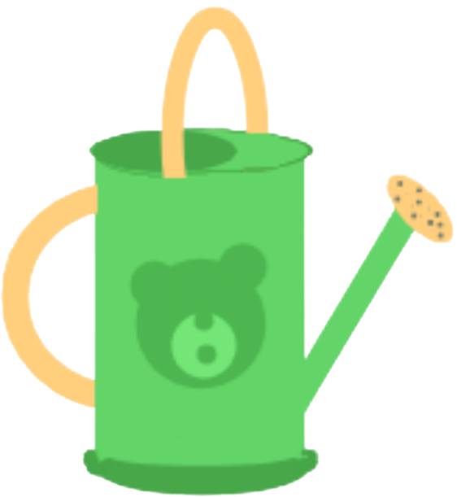
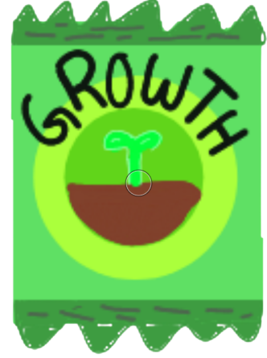
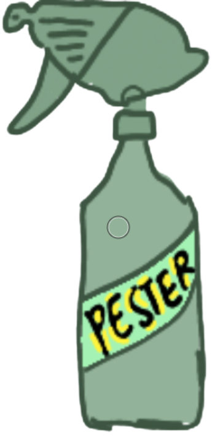

welcome to the nursery!
0 coins? try looking back at home! :D



refreshes in 3:00
10 coins per gallon
you have: 0 gal
100 coins each
you have: 0
50 coins each · −5 min per use
press E to open / close · click a crop to sell it or send it to the kitchen